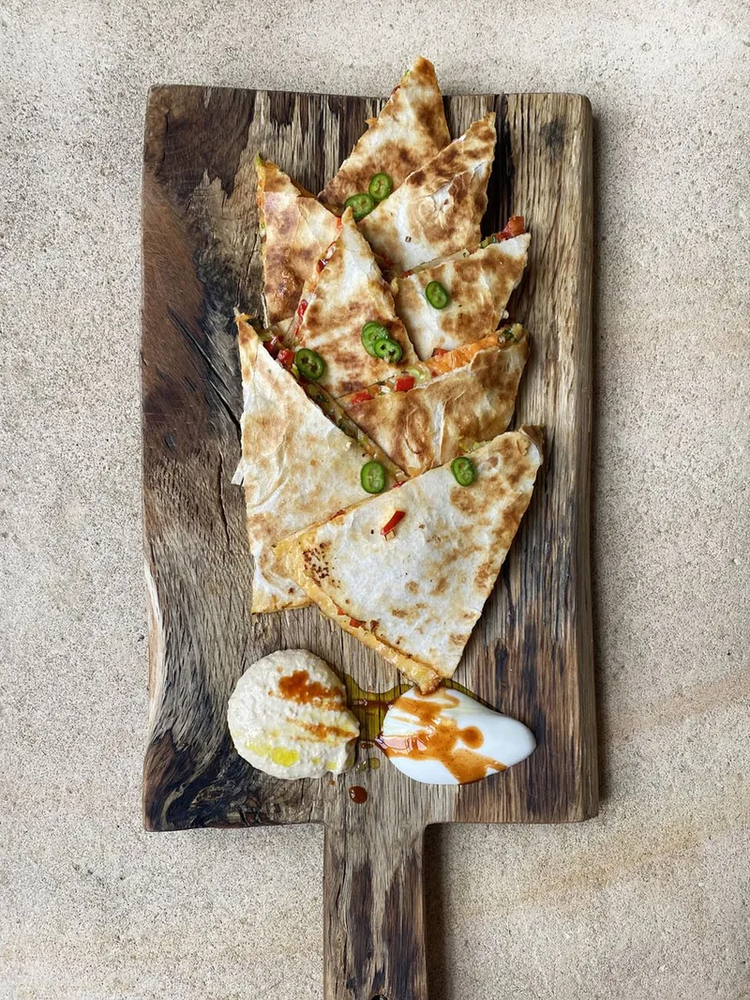

Veggie Quesadillas by Jamie O.

Description:
“Quesadillas are a big hit in the Oliver household –
the kids love them because they’re comforting and
delicious, and Jools loves them because they’re a
great way to include hidden veg. I’ve gone for leeks,
peppers and carrot here, but use whatever you’ve got,
just aim for 500g or more – think deseeded diced tomato,
chopped grilled veg, little florets of broccoli, shredded
spinach or kale, smashed roasted sweet potato or butternut
squash. Get ’em prepped, stack ’em up, and you’re ready
to cook.”
Ingredients:
- 3 leeks
- 3 peppers
- 1 large carrot
- 140 g Cheddar or Red Leicester cheese
- a few sprigs of fresh soft herbs, such as parsley or mint
- 8 large flour tortillas
- 200 g tub of houmous
- extra virgin olive oil
- 1 lemon or lime
- 1 fresh chilli, optional
- 120 g natural yoghurt
- chipotle chilli sauce, optional
Method:
- Peel off the outer layers of the leeks, then finely chop.
- Deseed and finely chop the peppers. Wash and coarsely grate the carrot.
- Put all the veg in a bowl, coarsely grate in the cheese, adding more if you have it, then mix it all together.
- To assemble, scatter the veg and cheese mixture across four tortillas, then top with the remaining tortillas.
- Put a large non-stick frying pan on a medium heat.
- One at a time, dry fry the quesadillas for 5 minutes, or until golden and crisp on the outside, and the cheese
has melted in the middle, turning halfway.
- Meanwhile, jazz up your hummus. Add half a tablespoon of extra virgin olive oil and a squeeze of lemon or
lime juice to the hummus tub, and mix together. You can add some fresh herbs here if you have any.
- Let each quesadilla cool for at least a minute before slicing into wedges. Finely slice the chilli, if using.
Serve with the jazzed-up hummus and yoghurt for dunking, topped with chilli sauce and the sliced fresh
chilli to add a bit of heat, if you like. Great with a fresh, crunchy salad on the side.
Tips / Easy Swaps
- I’ve used leeks because I didn’t have spring onions or onions, so use whatever you’ve got.
- Any colour of peppers would be delicious here, and if you don’t have fresh, jarred peppers would also work a treat.
- If you haven’t got any hummus, how about serving with guacamole or a simple tomato salsa? Even better, make your own houmous using tinned chickpeas
Back to Main page or check out
Caramelized Pineapple Tartlets or
Campfire Bread